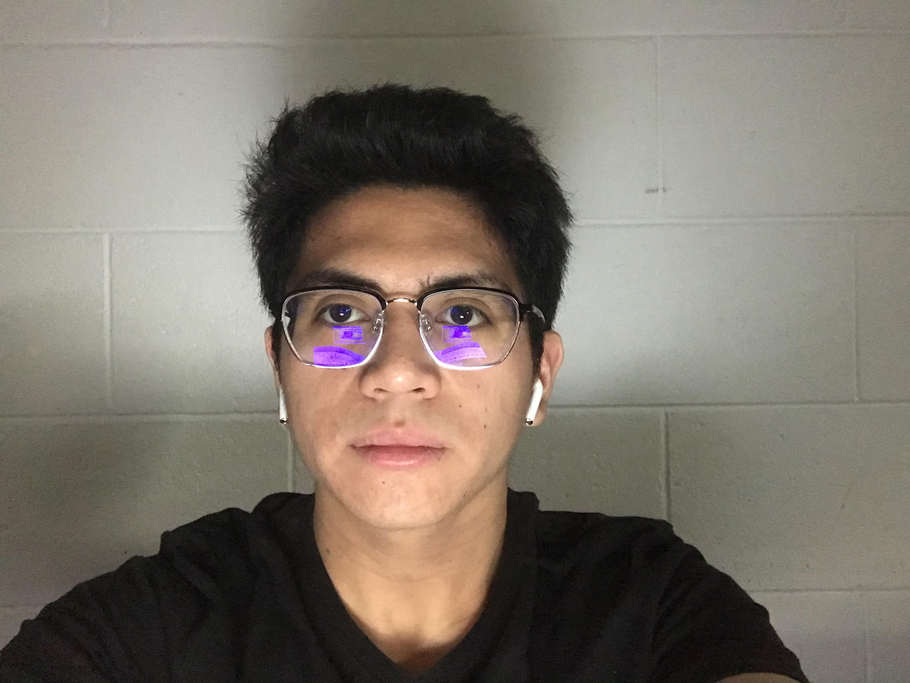
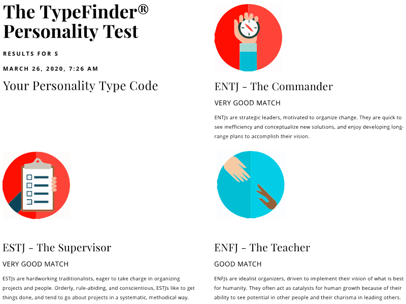

Team Profile
Team Member 1
Name: Enrique Del Carmen
Student Number: S3850685
Student Email Address: s3835344@student.rmit.edu.au
About Me
My name is Enrique Del Carmen and I am a first-year undergraduate studying a Bachelor of Information Technology at the Royal Melbourne Institute of Technology. I was born and raised in the Philippines and moved to Australia in 2014. For the past five years, I lived in Adelaide, South Australia where I graduated from both primary and high school and live some of the best years of my life. I have had a strong passion for Information Technology since I was a kid which is why I moved to Melbourne to study at RMIT to acquire the best possible education and to expand my horizons in one of the most lively cities in the world. Some of my other hobbies include music, gaming, design and a love of ancient history.
Informtion technology (IT) is a progressive and constantly evolving field, which provides a wide range of opportunities. One of the most interesting aspects of a career in IT is that you are not limited to a few options. There are many job prospects with the right key skills and knowledge including app development, data security, system development, and web design. As the industry continues to evolve alongside technology, there will always be new opportunities for professions involving IT. Furthermore, it is also fascinating to a part of a field that is revolutionising the world. What drew me to information technology as a kid was how fascinating computers are, I wanted to further my understanding about how it worked and what it could achieve, as I increased my knowledge, the more interested I became in IT. This led me to enrol in IT classes in high school where I worked on projects such as app and game development, robotics and web design. Additionally, I enrolled in a Cert III IT course where I learned practical related-work skills, obtained industry-specific knowledge and experience and gained an understanding of IT work environments.
Ideal Job
The role of a cyber security analyst is to asses, plan and perform security measures to protect the information networks and computer systems of an organisation. This occupation involves simulating attacks to determine possible vulnerabilities, ensure members of the MFB comply to the relevant security protocols and collaborate with a team to secure the IT environment of the company. One of the most appealing aspects of a position of the cyber security is the growth and possibilities, as the world becomes increasingly digitised and reliant on technology, there will be a constant demand for jobs in this industry. Furthermore, in this position, there will be constant work required to protect and improve the security of system, leading to new and engaging challenges.
From previous experience in high school and a Cert III Vet course for IT, I am building industry-related skills required for my future careers. These include programming languages such as Arduino, C++, C#, Python and Java. I am also able to install and optimise system software, run diagnostic tests, implement system software changes, construct simple relational databases, configure virtual machines and conduct basic system administration. However, I do not have the necessary attributes required for a career in cyber security and instead will use my time in RMIT to build industry-relevant skills for it.
Personality Profile
The purpose of these tests was to analyse my personality and learning style to determine my key traits and methods of learning. It can be used to further understand myself and possibly improve my approach to studying. The Myers-Briggs test stated that my personality matched certain attributes of the ENFP-Champion, ESFP-Performer and ENTP- Inventor. These personalities include traits such as energetic, passionate, fun-loving and motivated. While these characteristics describe me to a certain extent, I believe that there will never be certain personalities that define me specifically, as I will growing and developing throughout my life. The learning style test determined that my preferred method of learning is auditory. While this my preferred learning style, I can always adapt it to different methods in order to improve how I study. Finally, the big five personality traits test it analysed five key attributes including openness, conscientiousness, extraversion, agreeableness, neuroticism. Similarly, to the results of the Myers-Briggs test, I believe that traits and personalities will constantly change throughout someone's life due to certain circumstances and events.
The tests indicate that my behaviour would be highly compatible with working in a team. From the results of the Myers-Briggs test the key traits of the personality types I matched state that I will be exceptional at team work as I am energetic, passionate and fun-loving. As an auditory learning, I would be able to listen to other opinions and be open to their ideas. Furthermore, the high agreeability skill indicate that I can cooperate with group members easily. However, prior to these tests, I was already sure that my behaviour was ideal for team work as I have had to collaborate with others countless time and have always been able to work alongside each other to achieve our goals.
These tests would not greatly affect my decision making when forming teams as I am open to working with anyone. Ideally, I would prefer to work with others who posess similar traits, however, if we can collaborate to achieve our goals it does not matter. Even forming teams with group members with conflicting traits or contrasting methods to approach tasks, I am open to their ideas and would work towards finding common ground with them. Furthermore, if others are facing difficulties with their tasks, I would always try to assist them for us to be able to complete the task in the best standard.
Team Member 2
Name: Matthew Howaston
Student Number: s3835344
Student Email Address: s3835344@student.rmit.edu.au
About Me
I enjoy using computers in my day to day life, and I have seen how both technology and Information Technology have developed over the past 20 years and it is exciting. I would like to be a part of the further developments in this technology and I would like to see if I can have a better understanding of "how things work".
I could do this on a day to day basis
- Review, deploy and test new hardware and devices for end users
- Do daily backups
- Customer service and support
- Monitor and troubleshoot network performance
The skills and experience needed for this job are:
- Proved experience as an ICT Support Engineer of Desktop Support Engineer
- Well versed in ITIL
- Ability to perform Level 1 and Level 2 service requests
- Service Now ticketing system
- General desktop, hardware and device management support
- Windows O/S, Windows Server 2003 - 2016, Microsoft Office
- Experience with MDM - Citrix XenMobile, HP Storage and backup, Tape Drive support (HP Data Protector), Veeam, VMware, vSphere, Symantec Enterprise Vault, General VOiP support (Mitel and/or Polycom)
- The skills that I currently have for this position are good knowledge of Operating Systems and software applications (but probably not specific applications), excellent interpersonal skills and good written and verbal communication skills.
- To gain the skills for this position, my plan is to obtain my Bachelor of Information Technology degree from RMIT and to get a relevant internship to get direct hands on experience as a Desktop Support Engineer or Support Technician. Both of these will increase my knowledge of operating systems, software applications and remote connection systems. Additionally, I will gain experience in solving complex hardware and software issues. In the next three years I will have significantly increase my skills and knowledge in these areas. I feel that as I continue my studies and become more knowledgeable in the different areas of Information Technology, my ideas of an ideal job may change dramatically.
Personality Profile
You are analytical and objective, and like bringing order to the world around you. When there are flaws in a system, you see them and enjoy the process of discovering and implementing a better way. You are assertive and enjoy taking charge; you see your role as that of leader and manager, organizing people and processes to achieve goals.
Your Key Motivators:
Learning Style
- Prefers to see words written down
- When something is being described, the visual learner also prefers to have a picture to view
- Prefers a time-line or some other similar diagram to remember historical events
- Prefers written instructions rather than verbal instructions
- Observes all the physical elements in a classroom
- Carefully organizes their learning materials
Team Member 3
Name: Benjamin Anh-Khoi Phan
Student Number: S3854890
Student Email Address: s3835344@student.rmit.edu.au
About Me
- I was born in Vietnam and moved to Australia in 2011 in hopes of a better education.
- I've completed the basic education, which means I graduated Year 12, before now studying in RMIT university.
- Aside from the above information, I speak 2 languages somewhat fluently; Vietnamese and English, with the latter being my second language. I also have some education in Japanese but well, let's just say I wasn't exactly top student material.
- My hobbies include playing video games, watching anime and listening to music(mostly Japanese).
Ideal Job
I've got three companies that are basically my dream job to work for any of them; Blizzard, RiotGames and Valve. Unfortunately, none of the companies has any open positions in Australia but I also don't mind having to move overseas for the work. All of the jobs have some harsh requirements but well, it's a dream job that I have to work towards as my goal so it's expected. I'll talk in detail about Valve since that's my most preferred place to work at.
What about this job appeals to you?
Well, it's obviously the fact that the company is at the top of the industry as a well-respected name. Not only do they have the latest software and hardware there, the work that they do are both innovative and industry-changing. Additionally, the workplace according to a lot of former and current employees are very pleasant to work at and has satisfactory work confiditons.
What skill requirments does this job have?
It's listed on the website but I'll summarise it here; Strong grasp of C++, 4+ years of profressional software development experience, strong software engineering skills, good communication and teamwork skills and finally, the ability to finish work independently.
What is your plan on getting your job?
I still haven't graduated university yet so obviously that first... While I still don't have any concrete plans, or any for that matter, the general direction would probably be working for any IT-related company and steadily transition towards the gaming industry while gaining the needed experience and required skills to get the job. That's basically it for now, since I kind of need to learn the basics before thinking any further.
Personality Profile

"INFPs never seem to lose their sense of wonder. One might say they see life through rose-colored glasses. It's as though they live at the edge of a looking-glass world where mundane objects come to life, where flora and fauna take on near-human qualities. INFPs have the ability to see good in almost anyone or anything. Even for the most unlovable the INFP is wont to have pity."
- Introvert
- Intuitive
- Feeling
- Perceiving
Key Motivators
Team Member 4
Name: Timmy Nguyen Dang
Student Number: S3854890
Student Email Address: s3835344@student.rmit.edu.au

About Me
- My name is Timmy Nguyen Dang, I was born in South-East Melbourne with a Vietnamese background.
- I attended Salesian College Chadstone, where I completed my Victorian Certificate of Education in 2019.
- My hobbies include building and assembling computer systems, videogames (league of legends, player unknown’s battlegrounds, etc), basketball and learning about Japanese cars.
- I speak both Vietnamese and English fluently, as i grew up speaking Vietnamese at home.
Ideal Job
My ideal job would be to work in the IT Industry, mainly working with hardware, as I dont enjoy the software/programming side of IT as much. A specific ideal job would be a Desktop Technician for any big company. I would prefer to stay in Melbourne Australia for work, however, throughout my younger years, coming out of university, I wouldnt mind exploring options overseas for work.
What about job appeals to you?
This position is appealing to me as it ventures into the hardware side of technology, where the position would require computer system knowledge and a small bit of programming. This would be appealing to me, as I enjoy the hardware side of technology, rather than the software/programming side. The position mainly covers the hardware support as a technician for the company. The location of the company is also appealing, as it is located at the Melbourne CBD..
What skill requirments does this job have?
The skills of the job include customer service skills, where you must be able to speak a wide range of customers to assist with their needs and demands. Knowledge of DELL products and PowerShell Scripting, as well as knowledge on mobile device management. Other skills also include meeting room and video conferencing support, knowledge of the full Microsoft Suite of tools and application packaging skills.
What are your plans in getting this job
My plan as of right now, would be to complete my bachelor's degree in information technology at RMIT university and hopefully obtain a job in a small company/business working for their technical department in order to gain experience and skills. This would allow me to further build on my current skills working with computer hardware, in order to become more skilled and knowledgeable in this industry.
Personality Profile

"
Personality Traits
Learning Syle
What do these tests say about me?
These test results mainly just describe my personality to me in detail, I honestly do not think it affects me as much. I do not think these results will influence my behaviour in a team, as I am a very talkative person, that is able to work groups of people to complete a task. When creating a team, I should try looking for those that are also as communicative, to have an efficient and friendly working team.
Team Member 5
Name: Russel Lam
Student Number:s3854704
Student Email Address: s3854704@student.rmit.edu.au
About Me
- Background information: Family origin is from Vietnam, however born and raised in Melbourne, Australia
- Education:(2008-2013) Primary Education, St Pauls Apostle North Primary School
- (2014-2019) Secondary Education, Salesian College Chadstone
- (2020-Current) University, RMIT University City Campus
- Aside from the above information, I speak 2 languages; Vietnamese and English,
- My hobbies include playing video games and exercising.
- Interesting Fact: A fact is that Ive taken up the hobby in areas of fitness such as nutrition and exercise.
Ideal Job
Job Description
The position of an Enterprise Data Engineer is developed and deliver a modernized data product towards the business that could be effective in an agile environment. This position also provides a hand on practical with requirements of many engineering data functions with expands to the roles of data profiling. This type of job appeals to me as it delivers a high connection towards the data and analytics in which is an area of study that peaks my interest in addition to this is the appealing hands on experience within the job through the development of new function for the business.
What about this job appeals to you?
The skills required for this job is a strong understanding of data outcomes, experience of SQL language in programming and scripting language in areas such as python, knowledge of data such as querying tools and framework of data, a degree in Information technology in fields such as data and analyst, creative and hardworking.
What skils do you currently have?
Current skills I have is that I have basic knowledge of information technology, such as beginner level skill of programming and knowledge, in addition to this I have current beginner level of database concepts and design knowledge.
What is your plan on getting your job?
The plan is to build up my expertise over a period of time within this university course and broaden my range of skills to become advanced, I believe that through these years I would be able to come out as a knowledgeable graduate with expertise within the data and analytics field In which would allow me to join this field of job in the coming future.
Personality Profile
"
Personality Traits

IQ Test
Team Profile Analysis
Each of the members of the group have key traits that would beneficial for our group. Matthew Howatson is ambitious, influential, persistent and logical. He can take charge, make tough decisions, critique systems and process logic and is able to achieve success and status. From his traits it seems that he would be ideal to lead the group and could organize how the group would handle tasks and assist members with their work in regards on how it should be done and improved. Benjamin Pham traits can be defined as introverted, intuitive, feeling and perceiving. He can take assist others, contemplate philosophical or complex challenges, creatively solve complicated problems and follow flexible schedules that allow for room change. Benjamin would be an ideal member team as defined by his traits as he can assist other members with difficult tasks as he is able to solve and understand them. His flexibility trait will also be useful as not all members will be able to work in specific times. Enrique Del Carmen is an energetic, passionate, fun-loving and motivated. This indicates that he would highly compatible with the other members in the team as he would be able to assist others, open to different ideas and would always remain a positive attitude when working with others. Russel is a campaigner personality type which is defined by their creativity and freedom and is also social. From his traits, he would be highly beneficial member of the group as he would be able to collaborate with others and input creative ideas to the group. Timmy Nguyen Dang main personality traits are consciousness, extraversion and agreeableness. This indicates that he would be an another exceptional member for the group as he would be easily be able to work with others.
Ideal Jobs Analysis
All ideal jobs are in different fields but all falls under Information Technology with a focus on organizing and manipulating data. These are also common jobs people think of when IT comes up as a topic and all work to satisfy a consumer. They also synergise with each other as IT jobs often collaborate with one another for a project. For example, Ben’s ideal job as a games programmer might mean that he can work with Russel as a data engineer to work out the plans for a game and look over the coding of each element of said game. Furthermore, Matthew’s ideal job can also come in contact daily with Timmy’s ideal job as a desktop technician might need the help of an IT support engineer in case of problems. All of these jobs are often found under one company, working together as one big network for a project or product.
However, all these jobs are also different in that they target different consumers and are often considered to be working in separate industries. Video games would obviously often be Ben’s only focus but all the others often work in different industries as they have broad enough skills that they can work anywhere IT related. They also might have different permissions to work on minor or major projects as Timmy’s job for example, would only require him to work on daily maintenance or work on technical emergencies rather than actively be focusing on an ongoing project.
In the end, all of the ideal jobs are similar enough, as they all require some mastery over coding, and often work together as one big hivemind to finish or publish a product. Furthermore, they have enough common elements to the point of being able to help each other in case of emergencies or joint projects. However, they are also different in that aside from Ben’s specific focus, the rest of the group’s ideal jobs are often placed in different fields of IT and work to target different types of consumers.
Skills Analysis
Each person is targeted at a different aspect of IT in which everyone requires different sets of skills in cases such as where Matthew job as a IT support engineer is different compared to Ben’s job as a Games programmer as for example Matthew’s job is reviewing and deploying test on hardware and devices for consumers in which skills such as experience in ICT support engineer, ITIL knowledge and device support management is needed however compared to Ben’s is to use his knowledge in programming to be able to code and develop games for the consumer in which skills such as strong knowledge in C++, software development experience and engineering skills. Another comparison to this is Enrique job as a Cyber security analyst to Russell’s Data engineer, in which both used in many companies however the differences is that a security analyst needs to have programming skills such as Python, Java and C++ whereas a data engineer requires skills like SQL language, strong understanding of data outcome and program languages like Python. Each of these jobs are different in their own respective fields as shown that each requires different skill levels and requirements.
Ideal Jobs Comparison
Compare and contrast the ideal jobs for each person in the group. This may have changed due to feedback from Assignment 1. What common elements are there, if any? What differentiates each position from the others, if anything? How similar or different are your career plans across the group?